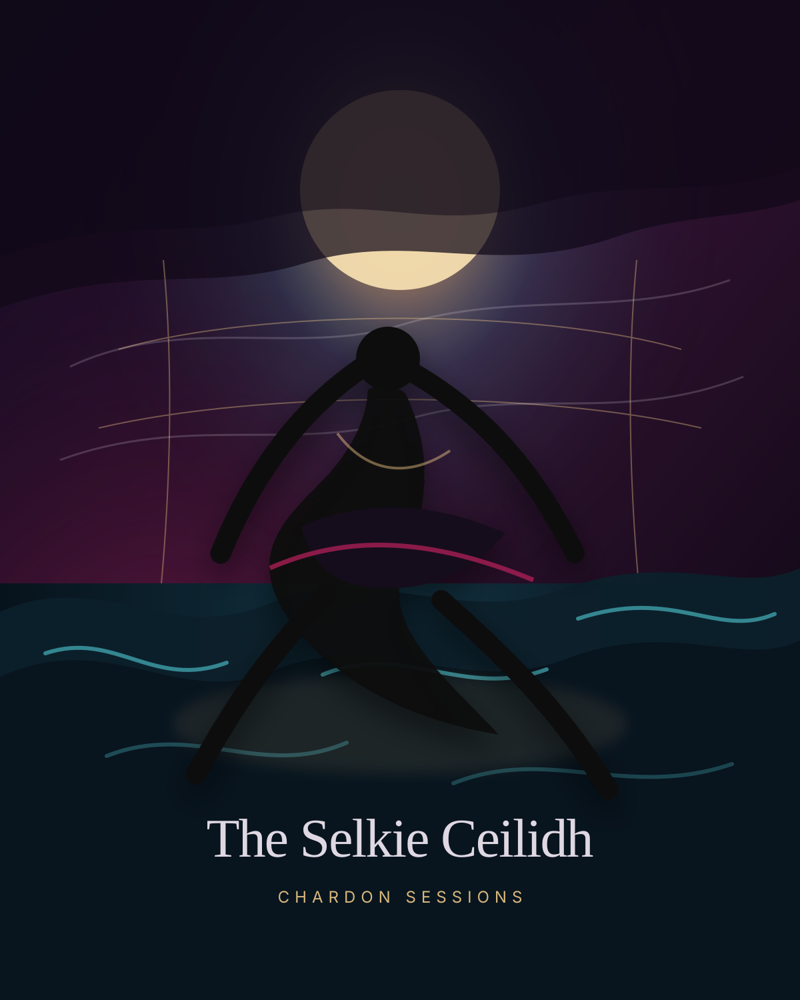

Love
Dramatic hooks, romantic tension, and melodies that feel like a confession under neon rain.
Dark bass house • gothic romance • cinematic lore
Chardon Sessions blends emotional dance music, strange romance, heavy drops, and myth-soaked storytelling into a growing universe of night drivers, cursed dances, and beautifully unhinged love stories.

Lore file 001
On the black rocks where the tide speaks in riddles, a seal-skin is hidden in the rafters of a lonely house. By day, she wears a borrowed name. By night, the sea calls her home.
The village thinks the ceilidh is only a dance: hands clasped, boots striking wood, fiddle lines rising like sparks. But every turn pulls the storm closer. Every chorus loosens the lie. The dance becomes a ritual, and the rhythm becomes a door.
In Chardon Sessions, love is rarely clean. It is beautiful, dangerous, obsessive, and sometimes it has teeth. This first lore song opens the world with salt, sorrow, bass, and one impossible question: can you keep what was never yours?
The aesthetic
Dramatic hooks, romantic tension, and melodies that feel like a confession under neon rain.
Beautifully unstable stories: obsession, curses, midnight bargains, and theatrical emotional swings.
Each release becomes a myth fragment, building a dark musical universe one song at a time.
“For the lovers, the overthinkers, the night drivers, and the beautifully unhinged.”
Release portal
When the track is ready, replace the button link with the final YouTube URL. This page is designed so every future lore release can get its own dedicated entry.